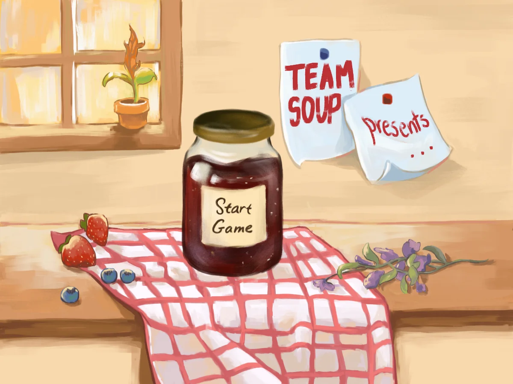
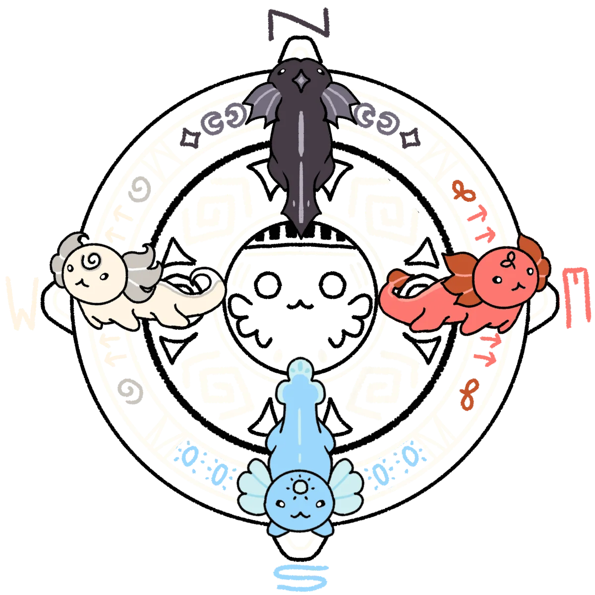
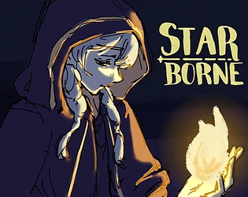

Volunteer researchNov 2023 to Jan 2025
Undergraduate Researcher (Machine Learning)
Developed image processing scripts to train a convolutional neural network to help fight neurodegenerative disease.
Skills: PyTorch, Neural Networks, Image Processing

Game jamMar 2025
Puzzle platformer visual novel. 1st place at Fiat Ludum Game Jam at UCLA. Over $6000 in prize value.
JobJun to Aug 2025
Embedded Firmware Development Intern
Engineered an LLM-based documentation pipeline and corresponding firewall to protect a radio against cybersecurity attacks.
Skills: Large Language Models, Prompt Engineering, Application Security, Go, C, C++

Game jamNov 2025
Axolotl-based puzzle game. 2nd place at ACM Studio Jam at UCLA.

Game jamMar 2026
Vampiric level-based runner game. 2nd place at Fiat Ludum Game Jam at UCLA. Over $1000 in prize value.
Skills: Godot, Storywriting, Collaboration with artists and musicians. See all my past games
ResearchMar 2026
I built a small Teamfight Tactics-style game where an AI model plays against people, then tested which kinds of instructions help it play better.
JobMar to Jun 2026
Research Assistant (Optimization)
Built and ran a constrained-optimization matching system to match mentors with mentees in health economics program.
Skills: Python, Mathematical Optimization
JobJun to Sep 2026
Machine Learning Engineer Intern
Architected and implemented a scalable, long-term data pipeline with a friendly user interface to expedite engineering team workflows.
Skills: React.js, Python, AWS GovCloud, Data Engineering
ResearchOct 2026
How accurately can people predict causation when mentally simulating alternate realities? In this study, I investigate a potential model to capture how people simulate physical interactions between moving balls with decreasing accuracy as complexity rises.
EducationJun 2027 (expected)
B.S. Applied Mathematics, minor in Data Science Engineering, GPA 3.9
Next